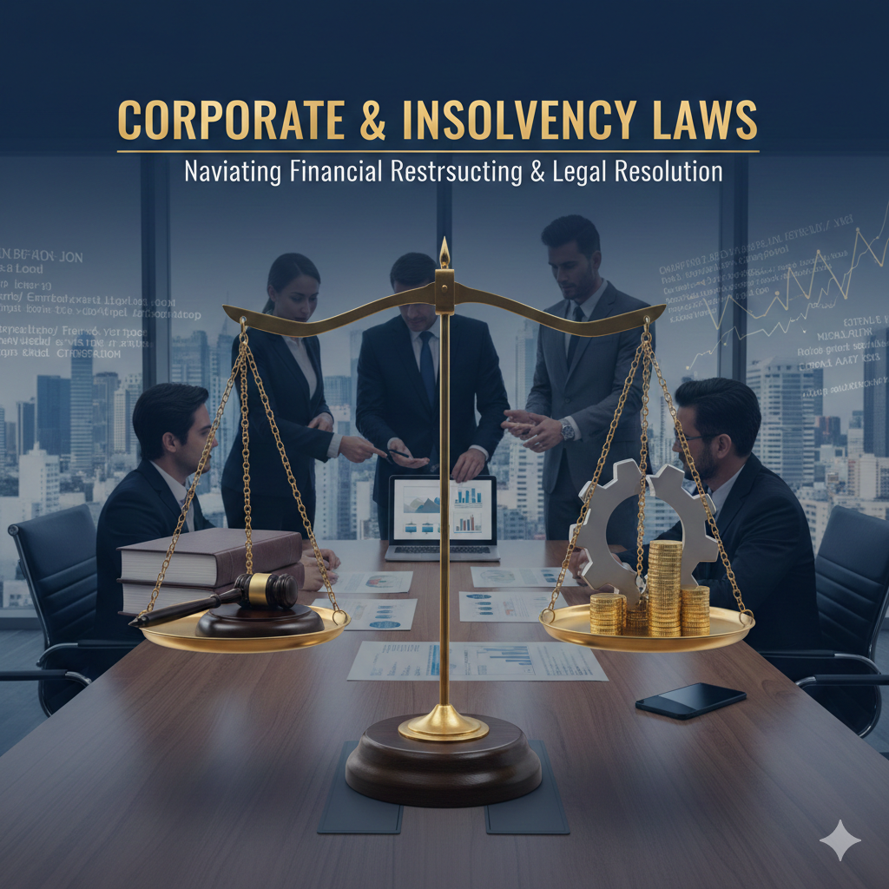

From pioneering decisions on arbitration and non-signatories to shaping the grounds for setting aside arbitral awards, our firm leads complex, high-stakes disputes across sectors.
Supreme Court ruled that all creditors, including government bodies, are bound by approved Resolution Plans under Section 31(1) of the IBC.
Represented Ultratech Cement in NCLAT and Supreme Court, setting precedent for maximizing asset value and ending creditor discrimination.
Supreme Court held that resolution applicants cannot withdraw plans post CoC approval.
Debated CoC’s authority to negotiate post-submission. NCLAT allowed further negotiation; firm contested in Supreme Court.
Challenging SEBI’s stance that regulatory dues aren’t ‘debt’ under IBC, with implications for SEBI, RBI, and others.
Supreme Court recognized government land charge holders as secured creditors, impacting resolution plans and 30,000 homebuyers.
Defended Resolution Plan challenges; Supreme Court upheld NCLAT’s view on amended CIRP regulations.
Advocating for constitutional rights of insolvent guarantors before the Supreme Court.
Challenging NCLAT’s order initiating insolvency for one housing project, arguing for broader IIR supervision.
Supreme Court upheld that income tax dues don’t override secured creditors under Section 238 of IBC.